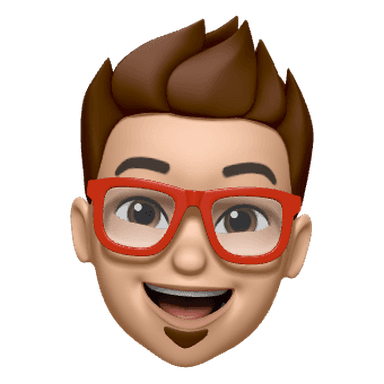

RM

I'm Rishov, a Mathematician and ML researcher working on neurosymbolic AI and autoformalization.
📍 Gift City, IN
Research
Teaching machines to write proofs they can verify.
Bridging natural-language reasoning and machine-verifiable formal proofs.
Currently
Predoctoral Researcher
Indian AI Research Organisation · Gift City
GitHub
@rishov16
↗Education
Indian Institute of Science Education and Research
MS in Mathematical Sciences · Mohali, India
↗Teaching
Cheenta Academy
Assistant Faculty, Mathematics Olympiad.
Research Intern
Indian School of Business
Operations Research.
Founder
Duuet — AI personal care advisor
Founded and led the venture. MeitY TIDE 2.0 Fellowship and Startup India Seed Fund; featured by NSRCEL, IIM Bangalore.
↗Off the clock
Combat sports, and hitchhiking with Megha.
Say hello
rishov.mondal@iairo.ai
Always up for a conversation about proofs, optimization or olympiad problems.
↗